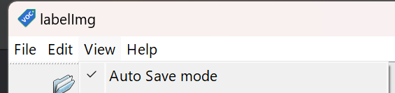

Использование Ultralytics YOLO
Ultralytics YOLO — это открытая библиотека на Python для обучения и применения моделей YOLO предназначенных для задач компьютерного зрения: обнаружение объектов, сегментация, классификация. Официальный сайт Ultralytics YOLO.
Установка необходимого и первый запуск
1. Python 3.10 и выше
- Скачать можно на официальном сайте python.org.
- Самые новые версии могут временно не поддерживаться YOLO.
- Прямая ссылка на Python 3.12.10, Python 3.13.2 (100% рабочая)
- При установке нужно устанавливать от имени администратора и поставить галочку в Add to PATH
2. Установить драйверы NVIDIA (Только если есть видеокарта NVIDIA RTX)
- CUDA Toolkit https://developer.nvidia.com/cuda-downloads
- cuDNN https://developer.nvidia.com/cudnn-downloads
Выбирать версии для Windows 11.
3. Установить pytorch
- Выбрать нужную версию https://pytorch.org/get-started/locally/ и установить через командную строку. (Win + R, cmd)
Например:pip3 install torch torchvision torchaudio --index-url https://download.pytorch.org/whl/cu129
4. Установить нужные библиотеки
- в командную строку написать:
pip3 install ultralytics opencv-python
4.5 Проверка установок
- для проверки установки драйверов и библиотек используйте скрипт YOLOchecker.py. При работе в IDE запускать внутри виртуальной среды проекта.
Частая проблема когда torch установлен неправильно.
Нужно удалить torch
python -m pip uninstall -y torch torchvision torchaudio
python -m pip cache purge
И установить заново torch.
5. Скачать предобученную модель
- для первого примера скачать YOLO11n из https://docs.ultralytics.com/ru/tasks/detect/ Больше моделей и датасетов https://docs.ultralytics.com/ru/datasets/
6. Запустить тестовый скрип
Запустить python IDLE -> file -> new file Написать код и сохранить в папку со скаченной моделью YOLO11n
import cv2
from ultralytics import YOLO
import torch
import time
# Проверка используется gpu или cpu
device = 'cuda' if torch.cuda.is_available() else 'cpu'
print(f"Using device: {device}")
# Загружаем нужную модель
model = YOLO('yolo11n.pt').to(device)
print("Available classes:", model.names)
# включаем камеру
webcamera = cv2.VideoCapture(0)
while True:
#проверяем что камера работает и получаем изображение
success, frame = webcamera.read()
if not success:
break
# засекаем время для подсчёта FPS
start_time = time.time()
# Применяем модель на кадр
results = model.track(frame, conf=0.8, imgsz=640)
# Подсчёт ФПС
end_time = time.time()
fps = 1 / (end_time - start_time)
# Отображение ФПС
cv2.putText(frame, f"FPS: {int(fps)}", (200, 50), cv2.FONT_HERSHEY_SIMPLEX, 1, (0, 255, 0), 2, cv2.LINE_AA)
cv2.putText(frame, f"Total: {len(results[0].boxes)}", (50, 50), cv2.FONT_HERSHEY_SIMPLEX, 1, (0, 0, 255), 2, cv2.LINE_AA)
cv2.putText(frame, f"Press 'Esc' to exit", (50, 100), cv2.FONT_HERSHEY_SIMPLEX, 1, (255, 0, 0), 2, cv2.LINE_AA)
# Вывод изображения
cv2.imshow("Live Camera", results[0].plot())
# Нажать Esc для закрытия приложения
if cv2.waitKey(1) == 27:
break
# Отключение камеры и закрытие окна
webcamera.release()
cv2.destroyAllWindows()
Для смены камеры меняем цифру в строке
webcamera = cv2.VideoCapture(0)
Python скрипт для проверки списка камер:
import cv2
for i in range(10):
cap=cv2.VideoCapture(i, cv2.CAP_DSHOW)
ok=cap.isOpened()
cap.release()
if ok: print(i)
wmic path Win32_PnPEntity where "PNPClass='Camera' OR PNPClass='Image'" get Name,DeviceID
Бонус:
Сокращённая версия кода
import cv2
from ultralytics import YOLO
model = YOLO('yolo11m-pose.pt').to('cuda')
wc = cv2.VideoCapture(0)
while cv2.waitKey(1) != 27:
results = model.track(wc.read()[1], conf=0.8, imgsz=640, verbose=False)
cv2.imshow("Live Camera", results[0].plot())
wc.release(); cv2.destroyAllWindows()
Скрипт для обновления YOLO
YOLO v11 имеет разные тренированные модели

Classify — задача классификации изображений. Определяет один класс для всего изображения (или кропа).
Detect — задача обнаружения объектов. Находит каждый объект и присваивает класс, обрамляя прямоугольным bbox.
Segment — задача сегментации экземпляров. Находит каждый объект, присваивает класс и выдает пиксельную маску его контура (часто вместе с bbox).
Track — задача трекинга объектов во времени. Присваивает устойчивые ID уже найденным объектам в видеопотоке, связывая их между кадрами.
Pose — задача оценки позы. Находит объект (обычно человека) и предсказывает координаты ключевых точек скелета (часто вместе с bbox и классом).
OBB — задача обнаружения с повернутыми рамками. Находит объект, присваивает класс и выдает ориентированный прямоугольник (bbox с углом).
| Модель | Имена файлов | Задача |
|---|---|---|
| YOLO11 |
yolo11n.pt
yolo11s.pt
yolo11m.pt
yolo11l.pt
yolo11x.pt
|
Обнаружение |
| YOLO11-seg |
yolo11n-seg.pt
yolo11s-seg.pt
yolo11m-seg.pt
yolo11l-seg.pt
yolo11x-seg.pt
|
Сегментация экземпляров |
| YOLO11-pose |
yolo11n-pose.pt
yolo11s-pose.pt
yolo11m-pose.pt
yolo11l-pose.pt
yolo11x-pose.pt
|
Поза/Ключевые точки |
| YOLO11-obb |
yolo11n-obb.pt
yolo11s-obb.pt
yolo11m-obb.pt
yolo11l-obb.pt
yolo11x-obb.pt
|
Ориентированное обнаружение |
| YOLO11-cls |
yolo11n-cls.pt
yolo11s-cls.pt
yolo11m-cls.pt
yolo11l-cls.pt
yolo11x-cls.pt
|
Классификация |
Дообучение моделей
Датасет
Датасет (англ. dataset) — это обработанный и структурированный массив данных.
Для YOLO необходим датасет определенной структуры:
dataset/
├─ images/
│ ├─ train/
│ ├─ val/
│ └─ test/ (опционально)
├─ labels/
│ ├─ train/
│ ├─ val/
│ └─ test/ (опционально)
├─ train.py
├─ model.pt
└─ dataset.yaml
Пример dataset.yaml
train: ../images/train
val: ../images/val
test: images/test
nc: 3 # количество классов
names: ['person', 'car', 'dog']
Пример train.py
from ultralytics import YOLO
model = YOLO("yolo11n.pt") # выбираем модель для дообучения
# Train the model
model.train(
data="dataset.yaml", # путь к dataset.yaml
epochs=50, # количество эпох(кругов) обучения
imgsz=640, # размер картинок
batch=16, # количество картинок за один шаг
workers=4, # число параллельных процессов,
project="yolo11_train", # папка для сохранения результатов
name="exp1", # название эксперимента
exist_ok=True # переписать если есть такая папка
)
Скрип для автоматического создания шаблона датасета:
Или в виде архива:
На 1 класс необходимо 200–500 изображений. Чем больше тем лучше.
Папки датасета:
- train — учит веса модели.
- val — оценивает во время разработки, подбирает гиперпараметры и останавливает обучение.
- test — финальная проверка один раз после выбора лучшей модели.
80% изображений идут в папку train, 20% в val.
Либо же 70% - train, 20% - val, 10% - test.
Скрипт для автоматического распределения файлов датасета
Скрипт для подсчёта файлов датасета:
Предобученные модели и собранные датасеты
Сайты:
- universe.roboflow.com
- huggingface.co
- github.com
Разметка данных
Для разметки данных используется программа labelImg.exe:
Официальная инструкция от автора labelImg.exe
Пошаговая инструкция:
- Создать папку для датасета. В любом месте на компьютере.
- Загрузить изображения для обучения в эту папку.
- Загрузить и запустить labelImg.exe
- Переключить режим на YOLO
- Включить режим автосохранения
 - Выбрать Open Dir и выбрать папку с датасетом, выбрать Change Save Dir и выбрать эту же папку
- Нажать на Create\nRectBox или на клавишу "W"
- Нарисовать прямоугольник вокруг нужного объекта и написать название класса
- Разметить все классы на картинке и нажать на Next Image или на клавишу "D"
-
Разметить все картинки датасета.
Скрипт для автоматического распределения файлов датасета. Пропустить шаги 11-12 при использованиию.
dataset_separator.bat -
Создать папки и файлы структуры датасета YOLO (посмотреть тут) или с помощью скрипта dataset_analyze.bat, или скачать архив dataset.zip.
- Распределить файлы по папкам:
80% изображений в dataset/images/train и их пары
80% текстовых файлов в dataset/labels/train
20% изображений dataset/images/val и их пары
20% текстовых файлов в to dataset/labels/val - В yaml файле написать количество классов и названия классов
- В train.py выбрать модель в model = YOLO("yolo11n.pt"), скачать и поместить эту модель в папку датасета.
- Подобрать параметры тренировки и запустить обучение. Ждать завершения обучения.
- После тренировки в папке датасета появиться папка runs, в ней найти папку с файлами тренеровки, например runs\detect\train. В папке weight будут лежать натренерованные модели best.pt и last.pt. Обычно используют best.pt.
- Для оценки эффективности в папке тренеровки есть изображение с данными.
Короткий ориентир для metrics/mAP50(B):
≥0.90 — отлично.
0.80–0.90 — хорошо.
0.60–0.80 — приемлемо.
<0.60 — обычно слабовато.
По mAP50-95 ориентир такой:
≥0.70 — отлично
0.60–0.70 — очень хорошо
0.40–0.60 — рабочий уровень
0.30–0.40 — слабовато
<0.30 — плохо
Параметры
train/box_loss → ошибка боксов на обучении. Должна падать.
train/cls_loss → ошибка классификации на обучении. Должна падать.
train/dfl_loss → Distribution Focal Loss для точности координат. Должна падать.
val/box_loss → ошибка боксов на валидации. Главное смотреть её, не должна расти.
val/cls_loss → ошибка классификации на валидации.
val/dfl_loss → DFL на валидации.
metrics/precision(B) → точность: доля верных предсказаний среди всех предсказаний. Меньше ложных срабатываний — выше.
metrics/recall(B) → полнота: доля найденных объектов среди всех истинных. Меньше пропусков — выше.
metrics/mAP50(B) → средняя AP при IoU≥0.50 на валидации.
metrics/mAP50-95(B) → средняя AP по IoU 0.50…0.95 (COCO). Главная сводная метрика.
Google colab
Google Colab — это бесплатная облачная среда, разработанная Google для написания и выполнения кода на языке Python прямо в браузере.
Модели можно тренировать в Google Colab с помощью: https://colab.research.google.com/github/EdjeElectronics/Train-and-Deploy-YOLO-Models/blob/main/Train_YOLO_Models.ipynb,
GitHub
Переведенная версия https://colab.research.google.com/github/aztechell/ru_Train-and-Deploy-YOLO-Models/blob/main/Train_YOLO_Models.ipynb, GitHub
Получение координат
Для работы с данными полученными от ИИ обычно выводят центральную координату найденных объектов.
Выводим координаты X, Y
for box in results[0].boxes:
x1, y1, x2, y2 = map(int, box.xyxy[0]) # Получаем координаты bbox
center_x, center_y = (x1 + x2) // 2, (y1 + y2) // 2 # Находим центр
class_id = int(box.cls[0]) #Получаем id
class_name = model.names[class_id] # Получаем название класса
# Extract tracking ID (if available)
track_id = int(box.id[0]) if box.id is not None else -1
print(f"Object: {class_name} (ID: {track_id}) at X={center_x}, Y={center_y}")
Примеры с Pose
Скачать yolo11n-pose.pt
В модели позы YOLO11 по умолчанию имеется 17 ключевых точек, каждая из которых представляет собой отдельную часть человеческого тела. Ниже приведена схема соответствия каждого индекса соответствующему суставу тела:
Список ключевых точек YOLO11-pose
0. Нос
1. Левый глаз
2. Правый глаз
3. Левое ухо
4. Правое ухо
5. Левое плечо
6. Правое плечо
7. Левый локоть
8. Правый локоть
9. Левое запястье
10. Правое запястье
11. Левое бедро
12. Правое бедро
13. Левое колено
14. Правое колено
15. Левая лодыжка
16. Правая лодыжка
Для отдельного нахождения координат одной ключевой точки, нужно извлечь её через results[0].keypoints.xy(0, номер точки). Например, правое запястье (точка 10).
Одна точка
import cv2
from ultralytics import YOLO
import torch
import time
device = 'cuda' if torch.cuda.is_available() else 'cpu'
print(f"Using device: {device}")
model = YOLO('YOLO11n-pose.pt').to(device)
print("Available classes:", model.names)
webcamera = cv2.VideoCapture(0)
j = 10 # правое запястье
while cv2.waitKey(1) != 27:
success, frame = webcamera.read()
if not success:
break
start_time = time.time()
results = model.track(frame, conf=0.8, imgsz=640, verbose=False)
r = results[0]
if r.keypoints is not None and r.keypoints.xy.size(0) > 0:
k = r.keypoints.xy[0, j]
x, y = int(k[0].item()), int(k[1].item())
cv2.circle(frame, (x, y), 6, (0,255,255), -1)
end_time = time.time()
fps = 1 / (end_time - start_time)
cv2.putText(frame, f"FPS: {int(fps)}", (50, 50), cv2.FONT_HERSHEY_SIMPLEX, 1, (0, 255, 0), 2, cv2.LINE_AA)
cv2.imshow("Live Camera", frame)
webcamera.release()
cv2.destroyAllWindows()
Нахождение нескольких точек.
Несколько точек
import cv2
from ultralytics import YOLO
import torch
import time
device = 'cuda' if torch.cuda.is_available() else 'cpu'
model = YOLO('YOLO11n-pose.pt').to(device)
cap = cv2.VideoCapture(0)
points = [0, 1, 2]
while cv2.waitKey(1) != 27:
ok, frame = cap.read()
if not ok:
break
t0 = time.time()
results = model.track(frame, conf=0.8, imgsz=640, verbose=False)
r = results[0]
if r.keypoints is not None and r.keypoints.xy is not None:
kpts = r.keypoints.xy
np, nk = kpts.shape[0], kpts.shape[1]
for pid in range(np):
for idx in points:
if idx >= nk:
continue
x, y = map(int, kpts[pid, idx].tolist())
cv2.circle(frame, (x, y), 6, (0, 255, 255), -1)
fps = 1.0 / max(1e-6, time.time() - t0)
cv2.putText(frame, f"FPS: {int(fps)}", (50, 50),
cv2.FONT_HERSHEY_SIMPLEX, 1, (0, 255, 0), 2)
cv2.imshow("Live Camera", frame)
cap.release()
cv2.destroyAllWindows()
Несколько точек с линиями.
Линии
import cv2
from ultralytics import YOLO
import torch
import time
device = 'cuda' if torch.cuda.is_available() else 'cpu'
model = YOLO('YOLO11n-pose.pt').to(device)
cap = cv2.VideoCapture(0)
pairs = [(1, 2), (5, 7), (7, 9), (6, 8), (8, 10)] # индексы keypoints, которые соединяем
while cv2.waitKey(1) != 27:
ok, frame = cap.read()
if not ok:
break
t0 = time.time()
results = model.track(frame, conf=0.8, imgsz=640, verbose=False)
r = results[0]
if r.keypoints is not None and r.keypoints.xy is not None:
kpts = r.keypoints.xy # shape: (num_persons, num_kpts, 2)
num_persons, num_kpts = kpts.shape[0], kpts.shape[1]
for pid in range(num_persons):
for a, b in pairs:
if a >= num_kpts or b >= num_kpts:
continue
x1, y1 = map(int, kpts[pid, a].tolist())
x2, y2 = map(int, kpts[pid, b].tolist())
cv2.line(frame, (x1, y1), (x2, y2), (0, 255, 255), 2)
#точки:
cv2.circle(frame, (x1, y1), 4, (0, 255, 255), -1)
cv2.circle(frame, (x2, y2), 4, (0, 255, 255), -1)
fps = 1.0 / max(1e-6, time.time() - t0)
cv2.putText(frame, f"FPS: {int(fps)}", (50, 50),
cv2.FONT_HERSHEY_SIMPLEX, 1, (0, 255, 0), 2)
cv2.imshow("Live Camera", frame)
cap.release()
cv2.destroyAllWindows()
Пример игры.
Игра
import cv2, math
from ultralytics import YOLO
import torch
device = 'cuda' if torch.cuda.is_available() else 'cpu'
model = YOLO('YOLO11n-pose.pt').to(device)
cap = cv2.VideoCapture(0)
target = 0 # нос
alpha = 0.05 # скорость подтягивания
conf_th = 0.5 # порог уверенности
cx = cy = tx = ty = None
while cv2.waitKey(1) != 27:
ok, frame = cap.read()
if not ok:
break
h, w = frame.shape[:2]
if cx is None:
cx = tx = w / 2
cy = ty = h / 2
r = model.track(frame, classes=0, conf=0.8, imgsz=640, verbose=False)[0]
found = False
if r.keypoints is not None and r.keypoints.xy is not None and r.keypoints.xy.size(0) > 0:
kxy = r.keypoints.xy
kcf = r.keypoints.conf # может быть None
num_kp = kxy.shape[1]
if target < num_kp:
x, y = float(kxy[0, target, 0]), float(kxy[0, target, 1])
ok_conf = True if kcf is None else float(kcf[0, target]) >= conf_th
if ok_conf and not (x != x or y != y): # проверка на NaN
tx, ty = x, y
found = True
# двигаем только если нашли новую цель
if found:
cx += (tx - cx) * alpha
cy += (ty - cy) * alpha
# рисуем
if found:
cv2.circle(frame, (int(tx), int(ty)), 4, (0, 255, 255), -1) # цель
cv2.circle(frame, (int(cx), int(cy)), 14, (0, 0, 255), 2) # игрок
# событие попадания
if math.hypot(cx - tx, cy - ty) < 12:
fs, thick = 3, 7
(tw, th), _ = cv2.getTextSize("GAY", cv2.FONT_HERSHEY_SIMPLEX, fs, thick)
org = ((w - tw) // 2, (h + th) // 2)
cv2.putText(frame, "GAY", org, cv2.FONT_HERSHEY_SIMPLEX, fs, (0, 0, 255), thick, cv2.LINE_AA)
cv2.imshow("Live Camera", frame)
cap.release()
cv2.destroyAllWindows()